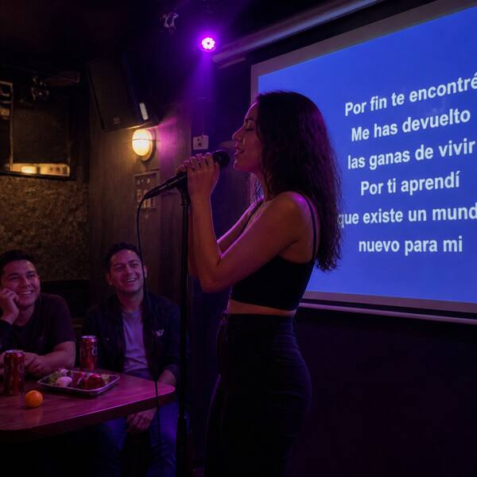

Evidencia digital · aportada por F. OrtizInstagram @pia.quesosdelsur · historias del viernes 30-10
E23Historias de Pía
pia.quesosdelsur
Hay gente que se va
a arrepentir.
a arrepentir.
Ubicación: no indicada21:55
pia.quesosdelsur
Karaoke La Tarima, Temuco centro22:52
pia.quesosdelsur

La segunda de la noche 🎤23:18
pia.quesosdelsur
Con la Fer, siempre00:20
 Open CaseEl Chupacabras de Labranza
Open CaseEl Chupacabras de Labranza